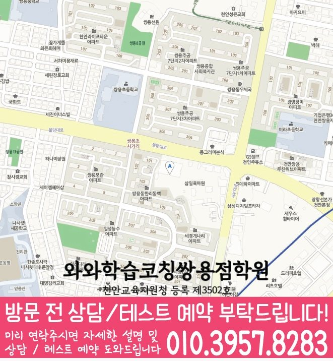

30초 핵심 안내
봉명동 고등 영수학원 선택 전 확인할 기준
충청 천안시 봉명동 고등 영수학원 페이지는 고1 학생의 영어·수학 취약점 진단과 주간 학습 설계를 설명합니다. 위치 정보는 충청남도 천안시 서북구 쌍용동 불당대로 260 319호 318호(1/2)이며, 입시상담예약 확인 기준과 학교 시험 준비, 학부모 상담 체크사항을 포함합니다. 성적이나 입시 결과를 보장하지 않고 점검 가능한 학습 과정을 중심으로 봉명동 페이지에서 안내합니다.
High School English & Math
봉명동 고등 영수학원 선택 전 무엇을 물어봐야 할까요? 충청 천안시 봉명동 고등학생의 과목별 진단, 주간 복습, 내신·오답 관리와 입시상담예약 확인법을 주소 충청남도 천안시 서북구 쌍용동 불당대로 260 319호 318호(1/2) 정보와 함께 구체적으로 설명합니다.
30초 핵심 안내
충청 천안시 봉명동 고등 영수학원 페이지는 고1 학생의 영어·수학 취약점 진단과 주간 학습 설계를 설명합니다. 위치 정보는 충청남도 천안시 서북구 쌍용동 불당대로 260 319호 318호(1/2)이며, 입시상담예약 확인 기준과 학교 시험 준비, 학부모 상담 체크사항을 포함합니다. 성적이나 입시 결과를 보장하지 않고 점검 가능한 학습 과정을 중심으로 봉명동 페이지에서 안내합니다.
수업 안내 이미지

센터 위치 안내

봉명동 고등 영수학원에 대한 검색 의도는 단순히 학원 위치를 찾는 데서 끝나지 않습니다. 충청 천안시 봉명동 학부모라면 고1 자녀가 영어 학습량은 많지만 주간 성취 기준이 모호한 모습과 수학 공식을 외우지만 적용 조건을 구분하지 못하는 모습을 보일 때 어느 과목부터 어떤 방식으로 손봐야 하는지가 더 궁금할 수 있습니다. 이 페이지는 수업일과 비수업일의 공부량 차이가 너무 큰 학생에게 맞는 첫 진단과 입시상담예약 점검 기준을 제시하며, 성적이나 입시 결과를 단정하지 않고 확인 가능한 학습 과정에 초점을 둡니다.
봉명동 고등 영수학원 선택에서 먼저 확인할 것은 학생이 실제로 다닐 수 있는 위치와 수업 대상입니다. 제공된 정보는 충청남도 천안시 서북구 쌍용동 불당대로 260 319호 318호(1/2), 영어·수학 공통 가능 학년 고1·고2·고3이며, 최종 시간표는 상담에서 다시 맞춥니다.
봉명동 학교별 진도와 평가 방식은 같지 않으므로 쌍용고.월봉고 등 제공 학교 정보는 상담 준비의 출발점으로만 사용합니다. 실제 계획은 학생이 사용하는 교재, 시험 범위, 오답 기록을 확인한 뒤 결정합니다.
와와학습코칭센터 쌍용점의 제공 자료에는 천안교육지원청 등록 제3502호이 표시되어 있습니다. 봉명동 학부모는 이 정보와 교습비 자료를 확인한 뒤 수업 시간뿐 아니라 과제 확인과 재학습 방식까지 질문하는 편이 좋습니다.
입시상담예약에 대한 답은 한 문장 광고보다 확인 가능한 절차에서 나옵니다. 충청 천안시 봉명동 고등 영수학원을 비교할 때는 전형 설명보다 학생의 현재 자료를 바탕으로 선택지와 위험 요인을 함께 제시하는지 묻는 것을 기준으로 삼고, 불확실한 부분을 가능성으로 구분해 말하는지와 자료의 기준 시점과 출처를 설명하는지를 메모해 두십시오. 봉명동 상담에서 조건이 모호하면 다시 서면으로 확인해야 하며, 입시 결과나 합격을 보장하는 표현보다 근거, 조건, 대안이 함께 제시되는지를 기준으로 삼아야 합니다.
충청 천안시 봉명동 고등 영수학원을 다니더라도 학생이 혼자 공부하는 시간이 사라지면 학습 관리가 완성되지 않습니다. 봉명동의 이번 고1 학생은 수업 직후 15~20분의 회상, 다음 날 짧은 재풀이, 일주일 뒤 누적 점검처럼 간격을 둔 복습이 필요합니다. 영어와 수학의 분량은 다르게 잡되, 질문 수와 오답 재현 여부를 같은 주간표에 남기면 수업일과 비수업일의 공부량 차이가 너무 큰 경향을 줄이는 데 도움이 됩니다.
봉명동 고등 영수학원에서 고등 영어를 배우려는 고1 학생이 영어 학습량은 많지만 주간 성취 기준이 모호한 편이라면 새로운 교재를 늘리기 전에 최근 오답을 네 가지로 분류해야 합니다. 봉명동 기준으로는 단어를 몰랐는지, 문장 관계를 잘못 읽었는지, 글의 핵심을 놓쳤는지, 시간 때문에 추측했는지를 나누는 방식이 실용적입니다. 이후 같은 원인의 문항을 짧게 다시 풀고 학생이 근거를 말하게 해야 하며, 봉명동 학생의 학교 시험 계획에는 교과 자료를 회상하는 연습까지 추가해야 합니다.
충청 천안시 봉명동 학부모가 봉명동 고등 영수학원 수학 수업에서 확인할 것은 교사의 설명량보다 학생의 풀이량과 수정 과정입니다. 이번 고1 학생처럼 수학 공식을 외우지만 적용 조건을 구분하지 못하는 경우에는 예제를 본 직후 비슷한 문제를 푸는 것만으로 이해를 판단하면 안 됩니다. 봉명동의 학습 계획에는 조건이 바뀐 문항, 여러 단원이 섞인 문항, 시간 제한 문항을 순서대로 넣고, 틀린 뒤에는 풀이를 지운 상태에서 다시 시작하게 해야 실제 재현 여부를 알 수 있습니다.
봉명동 페이지에 제공된 수업 학교 정보에는 “쌍용고”, “월봉고”가 기재되어 있습니다. 봉명동 학부모가 학교 정보를 활용하는 가장 좋은 방법은 기출 경향을 맹신하는 것이 아니라 자녀의 실제 시험지와 수업 자료를 함께 보는 것입니다. 봉명동 고등 영수학원에서는 영어 교과 자료의 표현 변형, 수학 서술 과정의 감점 지점을 각각 확인하고, 시험 범위 공지 전과 후의 학습 비중을 다르게 잡아야 합니다. 특정 학교 이름의 반복보다 이번 시험의 자료와 학생 오답이 봉명동 내신 상담에서 더 직접적인 근거가 됩니다.
봉명동 고등 영수학원 상담을 준비할 때 참고할 주소는 충청남도 천안시 서북구 쌍용동 불당대로 260 319호 318호(1/2)입니다. 방문 전에는 수업료·시간표·정원·교재·보강처럼 바뀔 수 있는 내용을 확인하고, 최근 영어와 수학 자료를 지참하는 것이 봉명동 상담에 도움이 됩니다. 충청 천안시 봉명동 학부모는 첫 상담에서 모든 문제를 해결하려 하기보다 가장 큰 원인 한두 가지, 다음 점검일, 가정에서 확인할 항목을 정하고, 과장된 결과 약속이 아닌 실행 가능한 계획을 받아야 합니다.
Information Basis
이 페이지는 제공된 센터 정보와 지역별 원고를 바탕으로 작성했으며, 제공되지 않은 학교명이나 생활권 정보는 임의로 추가하지 않았습니다.
FAQ
봉명동에서 영어 학습량은 많지만 주간 성취 기준이 모호한 학생과 수학 공식을 외우지만 적용 조건을 구분하지 못하는 학생처럼 과목별 원인이 다른 경우, 영어와 수학을 따로 진단하고 주간 계획에서 연결하는 방식이 필요합니다. 봉명동 고등 영수학원이 적합한지는 반 이름보다 진단 근거, 질문 시간, 오답 재풀이, 과제 조정 기록으로 판단하는 편이 좋습니다.
충청 천안시 봉명동 고등 영수학원 상담에서는 영어에 필요한 짧은 반복과 수학에 필요한 긴 집중 시간을 다르게 배정해야 합니다. 두 과목 모두 완료율·정확도·오답 원인·다음 점검일을 남기되, 분량까지 똑같이 맞추지 않는 것이 봉명동 학생 관리의 핵심입니다.
봉명동 학생의 최근 시험지, 현재 교과서와 부교재, 학교 프린트, 수행평가 일정, 일주일 시간표를 준비하는 것이 좋습니다. 충청 천안시 봉명동 상담에서는 영어 서술형 감점과 수학 풀이형 감점을 따로 확인하고, 시험 범위 공지 전후의 계획이 어떻게 달라지는지 물어보십시오.
입시상담예약에 대해서는 불확실한 부분을 가능성으로 구분해 말하는지를 먼저 묻고, 답변이 학생의 실제 수업과 기록에 어떻게 적용되는지 확인해야 합니다. 봉명동 고등 영수학원의 설명이 모호하면 적용 조건, 담당자, 점검 시점, 변경 절차를 다시 질문해 같은 기준으로 비교하는 편이 좋습니다.
봉명동 페이지의 제공 주소는 충청남도 천안시 서북구 쌍용동 불당대로 260 319호 318호(1/2)입니다. 봉명동에서 이동 가능한 요일과 시간을 실제 생활표에 넣어 본 뒤, 운영 시간, 수강료, 반 정원, 교재비, 결석·보강 기준처럼 변동 가능한 정보는 방문 전 별도로 확인하십시오.
Parent Perspective
※ 다음 글은 봉명동 고등 영수학원 페이지 구성을 위한 학부모 관점의 예시 문안이며, 특정 학생의 실제 경험이 아닙니다.
최근 시험지만 보는 대신 평소 시간표와 오답 흔적까지 함께 살펴보는 방식이 봉명동 상담에서 도움이 되었습니다. 봉명동에서 학원을 비교할 때 영어·수학 수업 횟수만 봤는데, 이번에는 복습 간격과 질문 처리까지 확인했습니다. 입시상담예약도 적용 범위를 메모해 두니 과장된 기대 없이 우리 아이에게 필요한 조건을 정리할 수 있었습니다.